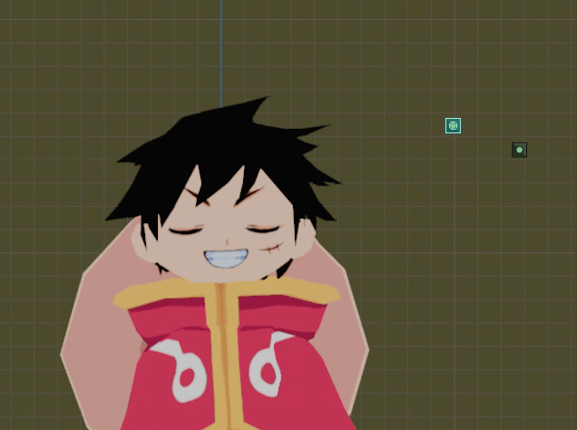
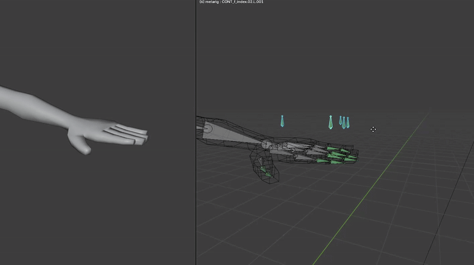

This is a fan project I made over the course of a week or so - a 3D character model made from scratch in blender. I wanted to test my ability to follow the full character modelling pipeline - from sketch to modelling, to texture painting, rigging, weight painting and lighting.
You can see the full process video and finished model below.
Here you can view and spin the model around. Note that this version of the model couldn't be exported with the intended toon shaders. For the finished result as I intended it to look, I've put a link to the process video below:)
You can also download the blend file here, if you'd like :)
The model features texture swapping with drivers for face animations, and a setup for animating the fingers quickly. The following gifs show some footage of how the model can be used.

The model features 8 eye textures and 8 mouth textures

A convenient way of posing the fingers using drivers :)
Warning, this video has some loud music. I will create a new video soon.
WIP: I will export a new video w/out music so it will be playable embedded in the website :I